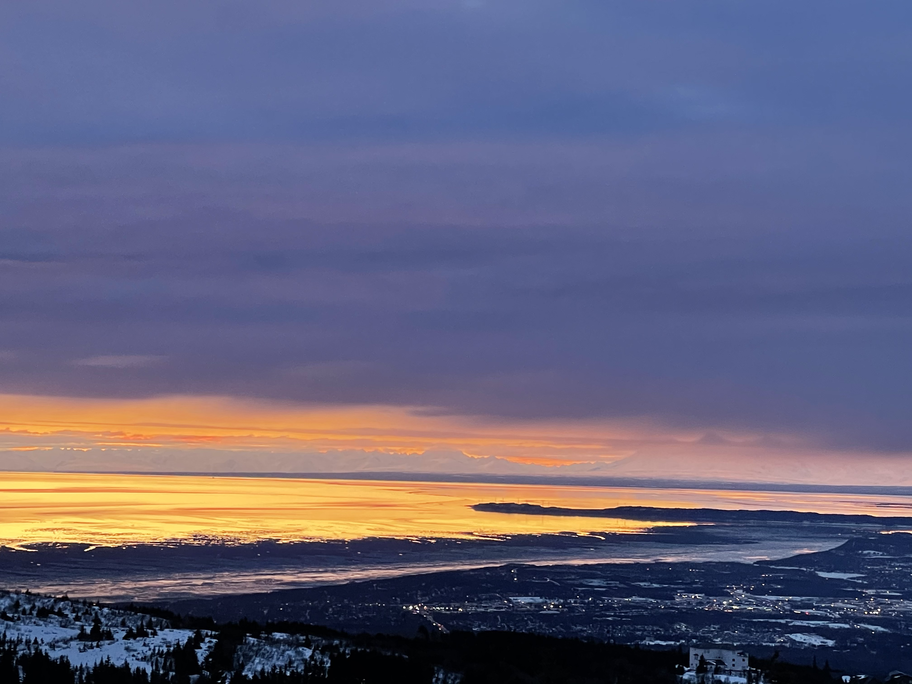
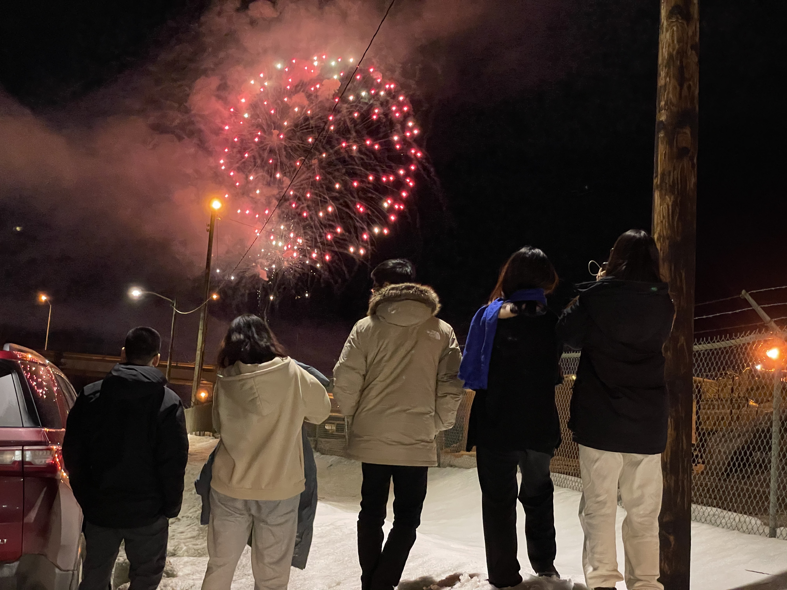
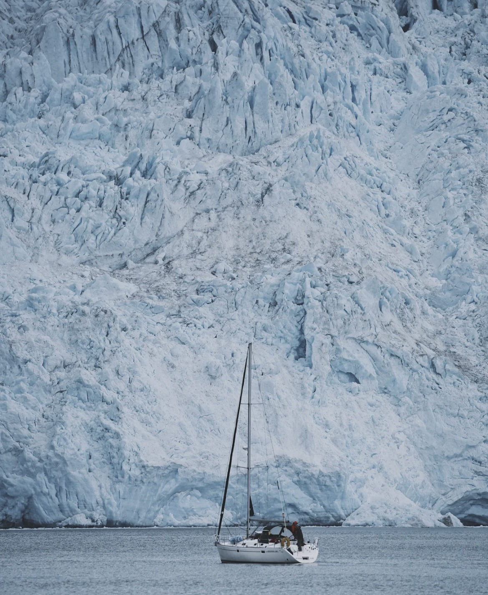
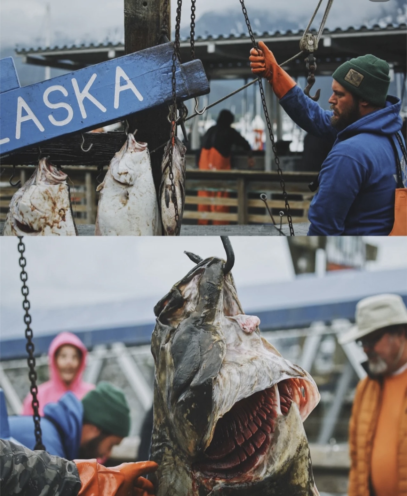

Metropolitan amenities mix with unrivaled natural splendor to make Anchorage an unforgettable destination.
nearly all visitors spend a night or two in Anchorage on their Alaska vacation. We did as well.
You can enjoy perhaps the best food in this largest city of state and lots of performances are available in downtown such as firework show.

city of Anchorage

firework in donwntown
SEWARD
The most surprising and exciting part of the trip to Alaska is the trip to the sea in the small town of Seward.
It is a 2.5-hour drive from Anchorage to Seward.
While the Seward Highway is known as one of the more dangerous highways to drive, it is reasonable to drive as long as you are aware of other drivers and don’t take risks while driving or park on the side of the highway to look at whales or Dall sheep.
After returning to the town, I passed by the fish market of the local fishermen.
The fishermen were full of fish weighing the huge flounder, which was also very novel.

sailing

fish market
FAIRBANKS
The most important activity of fairbanks is to watch the aurora.
November to March is a good time for the aurora. Four days in Fairbanks,
arranged three nights to see the aurora, and was lucky enough to see it on the first night. Of course,
there are other good activities such as hot springs and hiking the Castner glacier ice cave.